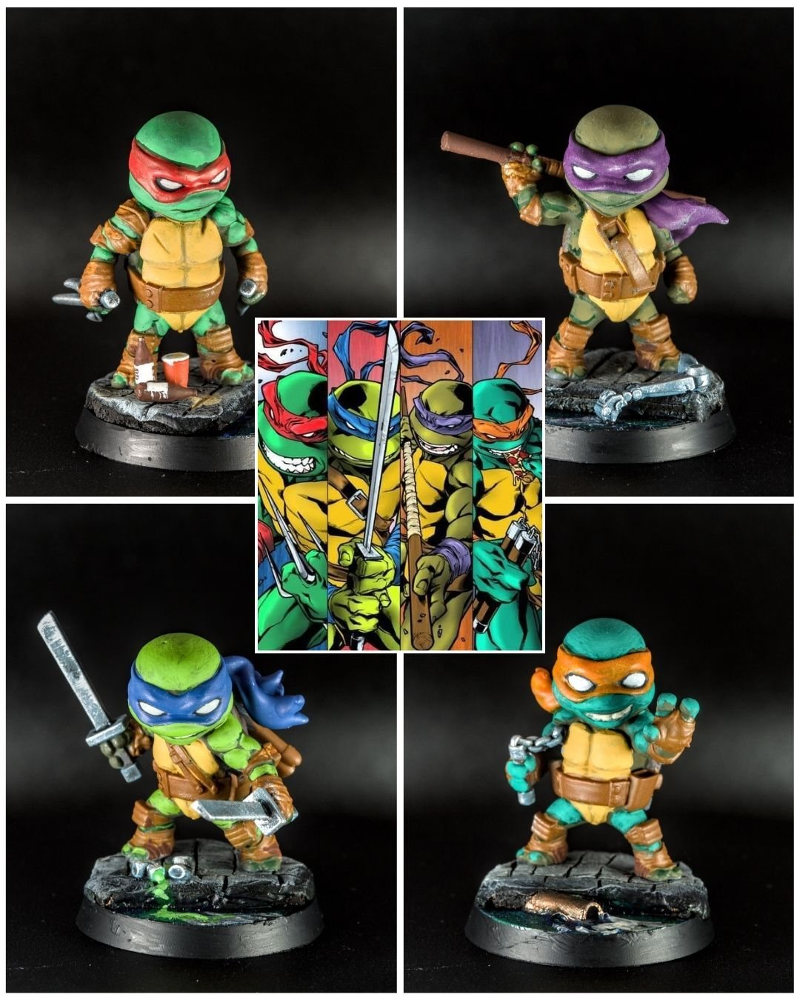
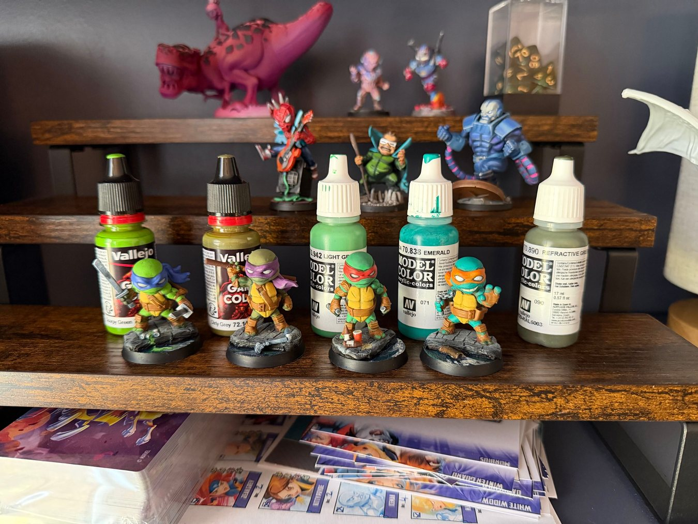
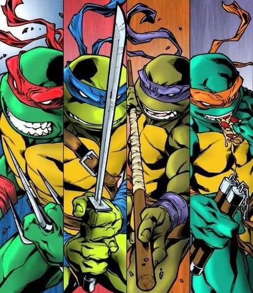

Cowabunga color theory
Cowabunga color theory 🐢🎨
The turtles didn’t originally have different skin tones in the cartoon — that came later (pretty sure it was a toy line marketing move). But it's how I remember them and makes painting them more fun, so I leaned into it. Here are the @vallejocolors I used...
All four started with a Refractive Green (Model Color) base coat, then I highlighted with:
🟢🦂 Scorpy Green (Game Color) for Leo
🟢🌫️ Dirty Grey (Game Color) for Don
🟢💡 Light Green (Model Color) for Raph
🟢💎 Emerald (Model Color) for Mikey
Wild how just a small shift in tone can make each turtle feel unique.
@vallejocolors @cmongames @coolminiornot @best4minis @best.of.miniatures
#MiniaturePainting #Miniatures #Painting #Art #Hobbies #boardgames #TMNT #NinjaTurtles #MarvelUnited #Warhammer
The full guide
- Plan the palette before you paint →Five minutes lining up base, mid and highlight for every color saves an hour of guessing on the mini.
- The next 10 paints to buy after a starter set →Buy the colors that remove friction from what you paint often, not the ones that look fun on the rack.